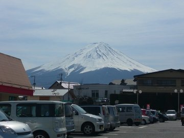
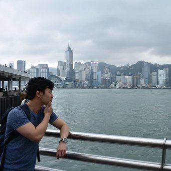
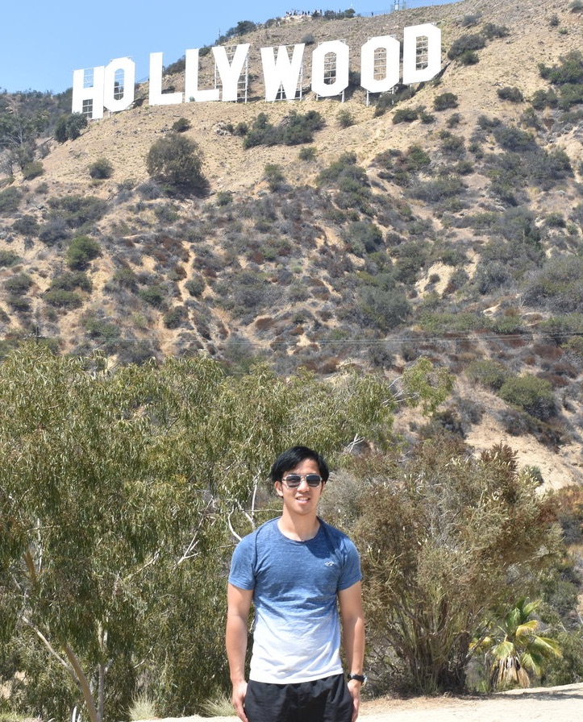

When I am not working, I tend to enjoy doing the following things:
Travel
Photography
Hiking
Bouldering
Travel Spots
Travelling to Japan for the very first time!
Mt. Fuji

It was a brilliant day to see Mt.Fuji!
It was a nippy day and snowed throughout the time. It was a real shame that I couldn't go hiking on
Mt.Fuji as you can only go up there during the summer season (July - September).
However, I managed to go and see a lot of things in the area such as
the Lake Kawaguchiko and
the Ice cave.
Hong Kong

Spent my time at
Victoria Harbour in Hong Kong. It was a great experience as I managed to take the ferry there.
Hollywood

I went to see the
Hollywood Sign closeup in Los Angeles. Although it was a bit of a challenge going up there, but it was worth it!